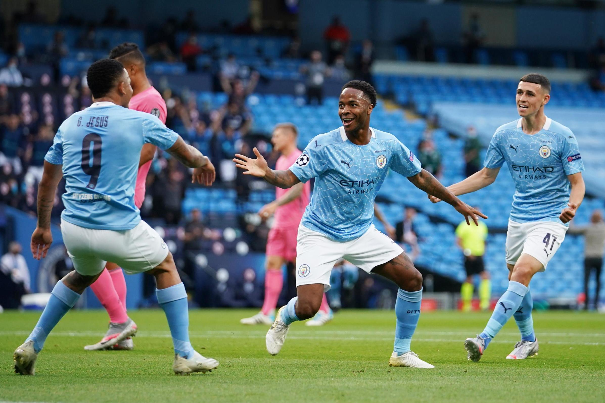
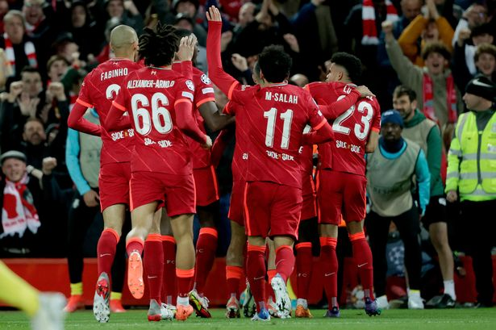
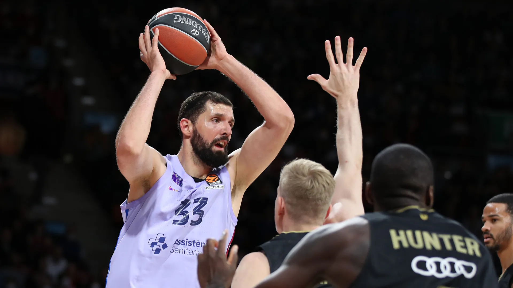
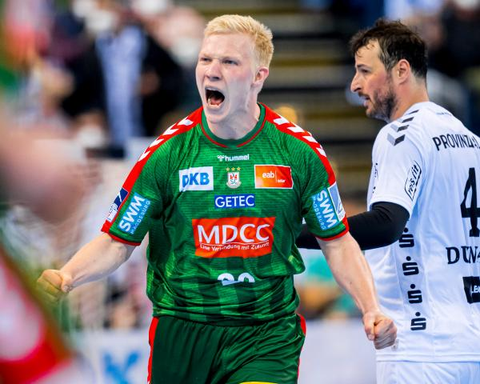
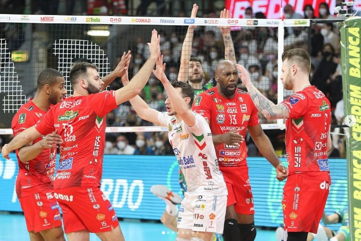
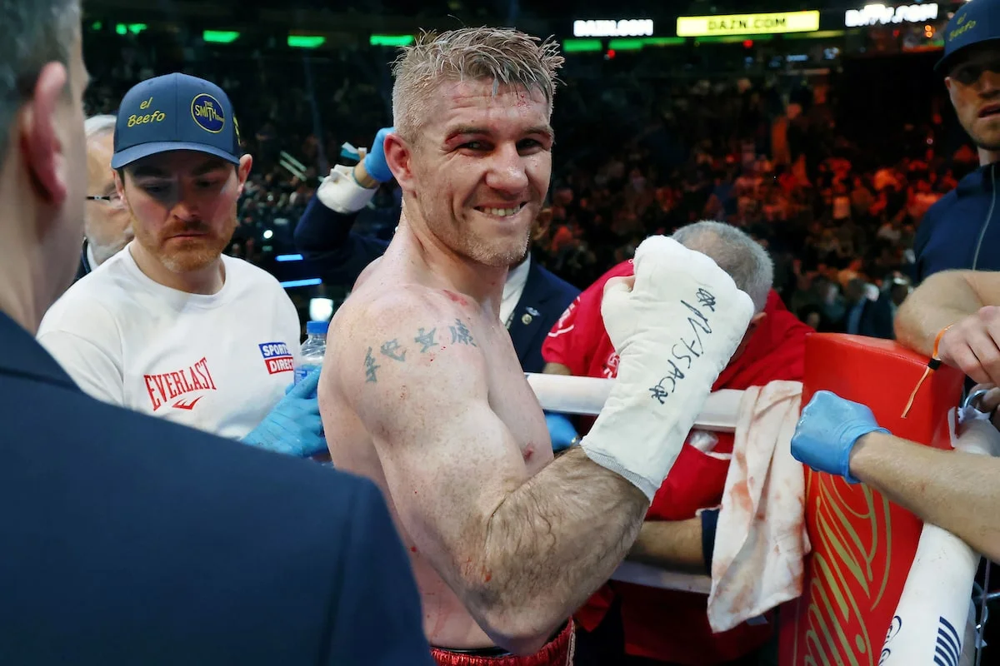

FOOTBALL MAIN NEWS
NO ONE CAN BELIEVE!
 Manchester City and Real Madrid played an all-time Champions League classic on Tuesday,
with Pep Guardiola's side taking home a 4-3 win in the semifinal first leg. The English side were dominant at times,
but their relentless opponents fought back time and time again to leave the tie open ahead of next Wednesday's second leg in Madrid.
Six different players scored on the night, the goalkeepers had games they will want to soon forget,
and so many players stepped up in a match that will be referenced for years to come. you can watch the matche's goals from here.
A ONE-SIDE MATCH!
 Liverpool have one foot in the Champions League final after beating Villarreal on Wednesday in their semifinal first leg,
2-0. Similar to their Merseyside derby victory over Everton last weekend,
the Reds had the chances to take command early but were just a tad off,
coming to life in the second half. Fans at Anfield had to wait for nearly an hour of play to see the first goal,
but it finally came via an own goal from Pervis Estupinan off a cross from Jordan Henderson in the 53rd minute.
Sadio Mane made it 2-0 just two minutes later thanks to his quick finish off a naughty nutmeg assist from Mohamed Salah.
you can watch the matche's goals from here.
BASKETBALL MAIN NEWS
Barcelona beats Bayern!
 FC Barcelona took a 2-1 series lead by downing FC Bayern Munich 66-75 with a dominant performance at Audi Dome on Wednesday.
Barcelona surged to a 13-point lead in the first quarter, which grew as high as 19 points in the second.
The visitors protected the double-digit advantage throughout the third quarter, and the red-hot Nikola Mirotic ensured the advantage was never troubled.
Mirotic excelled with 25 points on 8-of-11 field goal shooting, while Rolands Smits scored 12, and Nick Calathes gave leadership with 8 points, eight assists,
and seven rebounds. Vladimir Lucic paced Bayern with 17 points, Augustine Rubit added 14,
and Ognjen Jaramaz scored 13. The teams will meet again for Game 4 on Friday, with Barca one win away from the Final Four.
you can read more about the world cup from here.
HANDBALL MAIN NEWS
HE WILL STAY!
 Magnus Saugstrup Stays in Magdeburg Until 2026,SC Magdeburg has extended the contract
with line player Magnus Saugstrup by two years until 2026. "Magnus` extension is another landmark personnel decision for us.
All of us at the club are very happy about his decision to continue with us," said SCM Managing Director Marc-Henrik Schmedt.
VOLLEYBALL MAIN NEWS
ITALY First Game Of Finals!
 After 5 sets and two hours and 19 minutes of a play, No.2 Cucine Lube Civitanova beat
No.1 Sir Safety Conad Perugia in Game 1 of the 2021/22 Italian Men’s Volleyball Championship finals.
The 2021/22 Superlega Credem Banca finals couldn’t have started in a more spectacular way.
Just like in the semi-final series against Leo Shoes PerkinElmer Modena, the home factor lost significance already in Game 1 of the playoff finals,
with Lube managing to win the 5-set challenge full of surprises and overturns at PalaBarton. Lube dominated the first and fourth set,
Perugia rose in the second and third,so the verdict was postponed to the tie break. In it, Lube squandered 8-4 but still prevailed.
Cuban Robertlandy Simón finished the match as Lube’s the top scorer with 20 points,
making 82% attack (14/17). The entrance of Osmany Juantorena (after a long absence from courts) for a few rallies in the second set might be the signal
that Gianlorenzo Blengini will employ him more in the coming games of the series. Luxembourger Kamil Rychlicki tallied 14 points for Perugia.S
PINGPONG MAIN NEWS
Registration for 2023 World Veteran Championships Now Open.
 An event for the champions of the present and the past!
Registration for the 2023 World Veteran Championships, to be staged in Muscat, Oman from Sunday 15th to Saturday 21st January, is now open.
Several age categories and 44 World Titles on offer, this is an event for anyone and everyone who continues to show their passion for the sport.
Located in its own fully integrated business precinct, the world-class Oman Convention & Exhibition Centre will host the competitions and see the new champions being crowned.
you can read more details from here.
An event for the champions of the present and the past!
Registration for the 2023 World Veteran Championships, to be staged in Muscat, Oman from Sunday 15th to Saturday 21st January, is now open.
Several age categories and 44 World Titles on offer, this is an event for anyone and everyone who continues to show their passion for the sport.
Located in its own fully integrated business precinct, the world-class Oman Convention & Exhibition Centre will host the competitions and see the new champions being crowned.
you can read more details from here.
BOXING MAIN NEWS
LIAM SMITH PUSHES FOR ANOTHER WORLD TITLE SHOT.
 Liam Smith signaled his intentions to rule the super-welterweight
division once again by becoming the first man to stop Jessie Vargas in chief support of Katie Taylor vs. Amanda Serrano.
Smith got cut in the third round over his right eye. Vargas was cut in the fifth as both men came out firing.
The tide began to turn in Smith’s favor as the halfway mark approached and poured on the pressure.
He landed heavy artillery on the Vegas man, who somehow stayed on his feet, surviving an incredibly sustained attack in the ninth round.
The referee inspected the former two-weight World champion and deemed him ok to carry on.